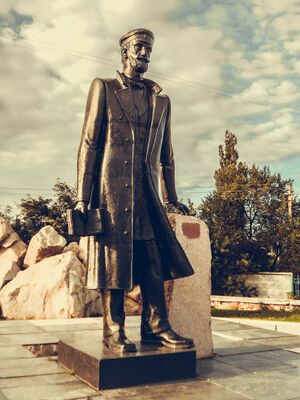
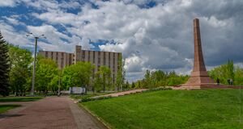
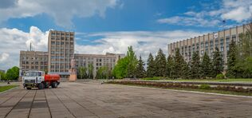
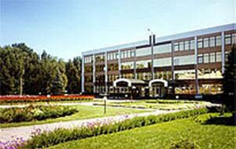
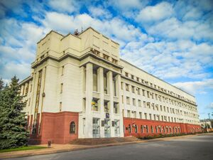

Открытие нового парка культуры
В центральной части города открылся обновлённый парк с детскими площадками и спортивными зонами. На мероприятии присутствовали жители города и приглашённые гости.

Го́рловка — город в Донецкой Народной Республике России. Является городом республиканского значения и административным центром одноимённого городского округа.
Наличие около сотни курганов на месте нынешней Горловки свидетельствует о многочисленных поселениях людей в древнейшие времена и даёт возможность для изучения истории города начиная не с даты основания, а на несколько тысяч лет ранее.
Более известные современной науке казацкие поселения появились в XVII веке, когда запорожцами и беглыми крестьянами Российской империи были основаны хутора вдоль рек Корсунь, Железная и Кодым. Для укрепления границ Российской империи правительство формирует во второй половине XVIII века славяно-сербские поселенческие полки, в состав которых входят сербы, хорваты, словенцы, валахи, сбежавшие от австрийского угнетения, а также украинские и русские крестьяне и казаки. Полки делились на роты, которые основали отдельные поселения на территории современной Горловки.
В 1754 году возникает село Государев Байрак (теперь — территория города). В 1776 году зимовники и хутора в балке Сухой Яр и в урочище Жёваный Лес слились в слободу Зайцево, южную часть которой назвали Никитовка (изначально Никитино), в честь одного из её жителей — Никиты Девятилова. В 1795 году в селе Государев Байрак и слободе Зайцево (оба — в черте современной Горловки) насчитывалось 6 514 человек, в слободе Железная в 1884 году — 3 529 жителей. В 1800—1805 годах образовываются хутора Щербиновский, Нелеповский. Слободу Железная заселяют преимущественно переселенцы из Харьковской губернии. В начале XIX века тут были открыты залежи угля, появились крестьянские мелкие шахты.

Памятник Петру Горлову
С началом строительства Курско-Харьковско-Азовской железной дороги в 1867 году основан посёлок, одноимённая железнодорожная станция Корсунь (позднее посёлку и станции присвоено имя Горловка), а также каменноугольный рудник, названный Корсунская Копь № 1. Рудник состоял из двух шахт, которые устраивал горный инженер Пётр Николаевич Горлов, заодно разработавший технологию добычи крутопадающих угольных пластов.
В 1889 году у посёлка Горловка (находившегося в составе Бахмутского уезда Екатеринославской губернии) промышленником А. Н. Глебовым было открыто месторождение антрацита и началось его освоение. Глебов сумел обратить внимание правительства на громадное значение своих работ, как для Донецкого края, так и для всей промышленной России, и получить субсидию в 1,2 млн рублей для строительства металлургических заводов. В 1895 году А. Н. Глебов образовал Государево Байракское-Товарищество, учредителями которого стали, кроме него, его брат Н. Н. Глебов, владелец доломитного завода при станции Никитовка К. Ф. Медвенский и горный инженер Л. Г. Рабинович[6]. А. Н. Глебов приобрёл у крестьян села Государев Байрак участок земли и построил шахту Святого Андрея. В 1897 году она вошла в строй. В Советское время шахта приобрела новое название — Шахта имени М. И. Калинина.

Обелиск Славы в сквере Коммунаров, Горловка

Площадь Ленина, Горловка
В 1932 году Горловку планировали сделать административным центром Донбасса, но уполномоченный по этому вопросу Лазарь Каганович, поразившийся непролазной грязи возле шахты «Кочегарка», решил ехать в Юзовку (Сталино).
В порядке проведения культурно-бытового похода имени XVII съезда партии в 1934 году осуществлена идея создания подземного буфета для горняков. В шахте № 1 на глубине 690 метров открыт буфет с холодными завтраками для рабочих.
В 1940 году в Горловке действовало 68 школ, в 1944—1945 учебном году в городе работало 13 средних, 5 неполных и 25 начальных школ, в 1949 году — 71 школа.
Во время оккупации немецкими войсками в ходе Великой Отечественной войны горловские шахты были затоплены отступавшими советскими войсками, оборудование машзавода имени С. М. Кирова было эвакуировано на Урал. На территории Горловки располагались румынские, венгерские, итальянские и германские части.
После освобождения в 1943 году на горловских шахтах зародилось движение за восстановление угольных предприятий под руководством Марии Гришутиной под девизом: «Девушки! В забой!»

Административное здание концерна «Стирол»

Здание «Донбассэнерго»
В центральной части города открылся обновлённый парк с детскими площадками и спортивными зонами. На мероприятии присутствовали жители города и приглашённые гости.
На площади города прошёл фестиваль, в котором участвовали творческие коллективы региона. Зрители смогли насладиться концертами и выставками декоративно-прикладного искусства.
В галерее города начала работу выставка картин современных художников Донбасса. Экспозиция будет открыта для посещения в течение месяца.